Faces, songs, and tables we were trusted to set.
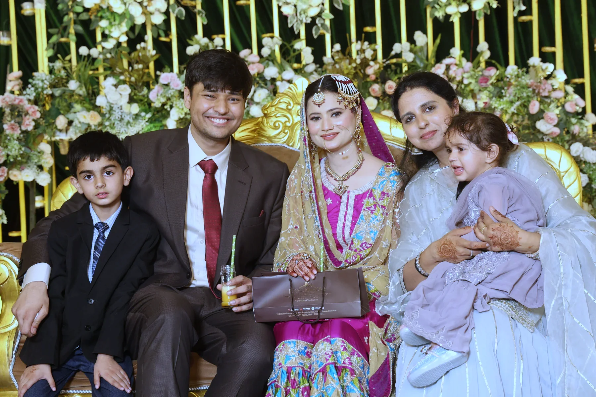
Every celebration is, in the end, a table of familiar faces.
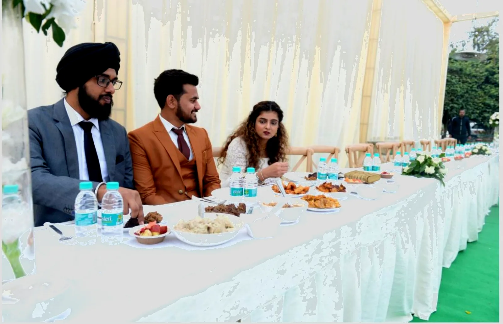
Behind every long evening is a table that was set with intention — from the cutlery in each hand to the plates the food sits upon.


Formal attire, unhurried movement, and a table that never waits.


Our staff are trained to anticipate — present without intruding, so the evening simply happens around every guest.
Wherever the crowd is, the newest food is. The trendiest stations — made live, at FM quality and FM pricing.
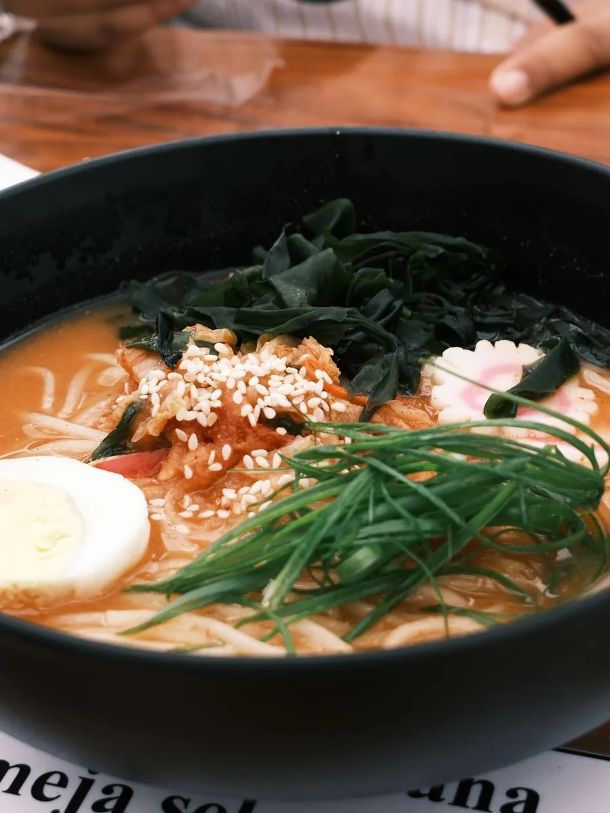
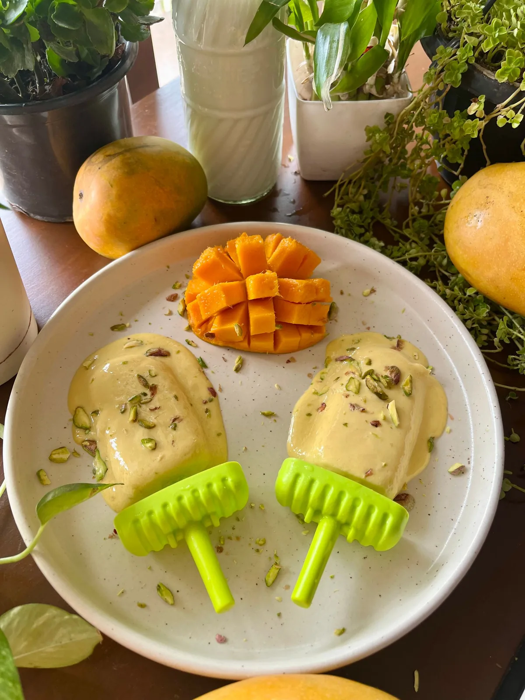
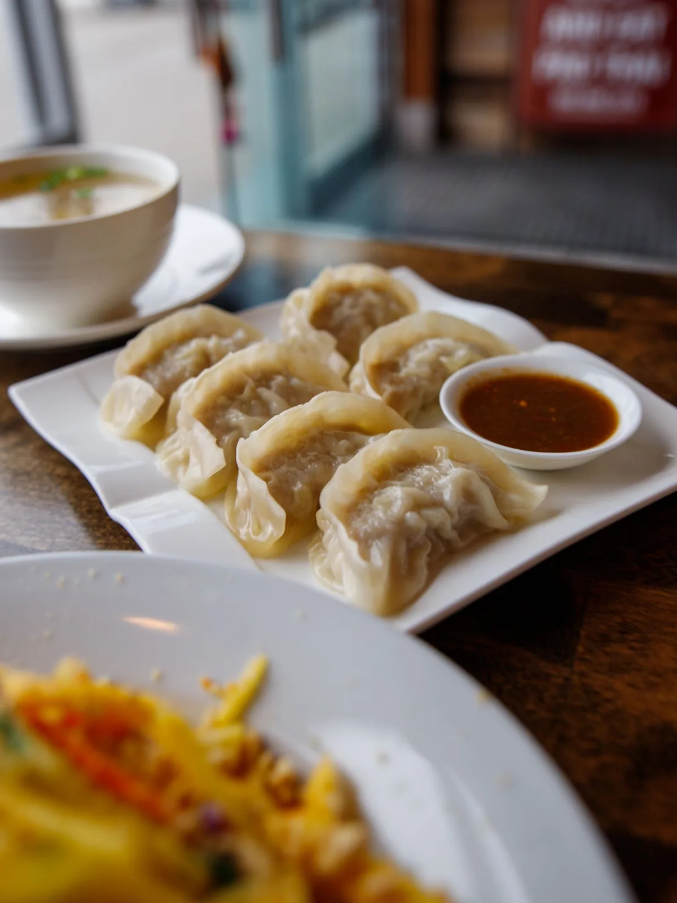
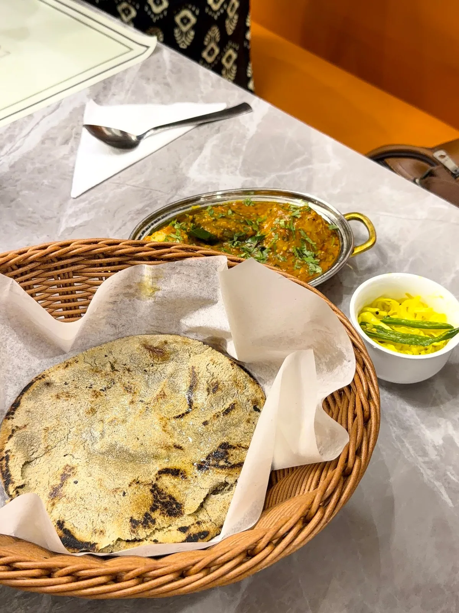
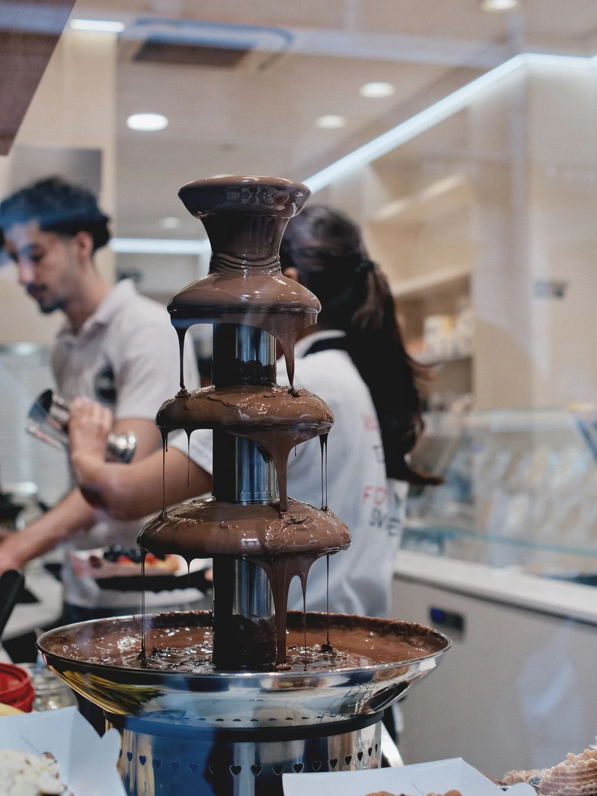
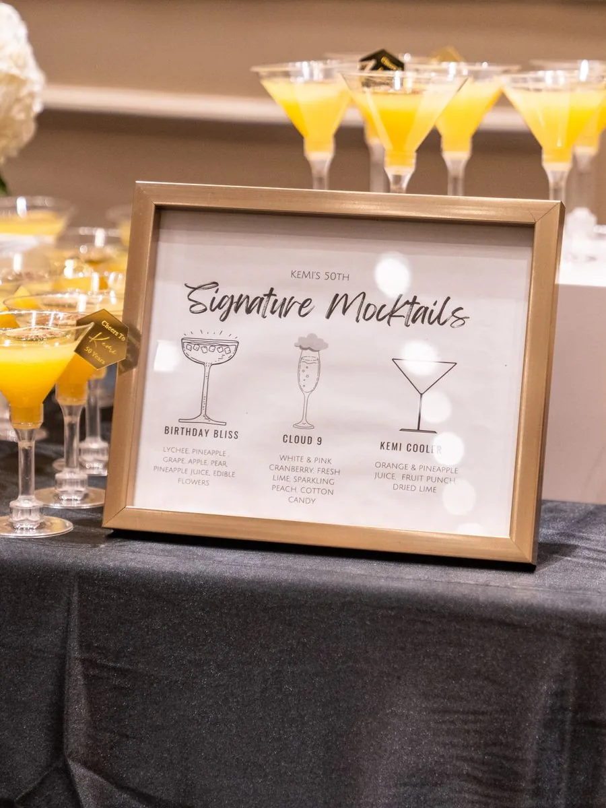
Veg ramen, steamed dumplings, punjabi saag, choco fountains, and multi-flavoured kulfi — the food people post about, served to a table you're proud of.
The moments between courses are the ones guests remember.
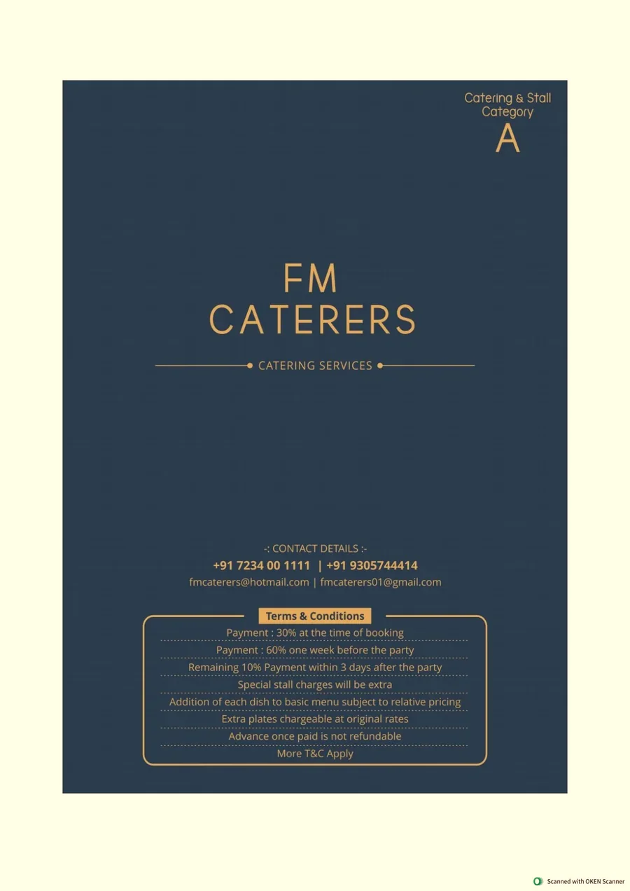
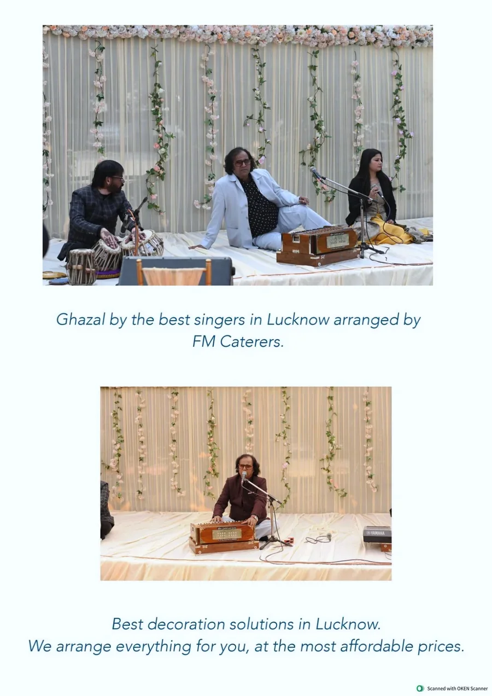
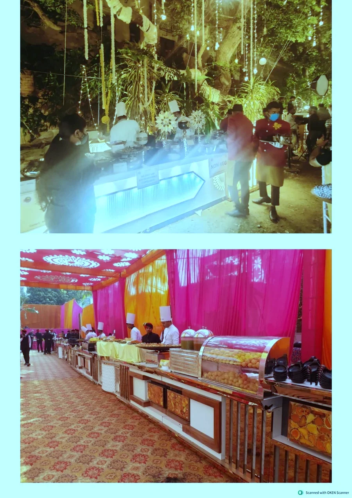
From intimate gatherings to grand institutions — every event treated as our own, every guest treated like family.
A few frames from celebrations we were trusted to hold.
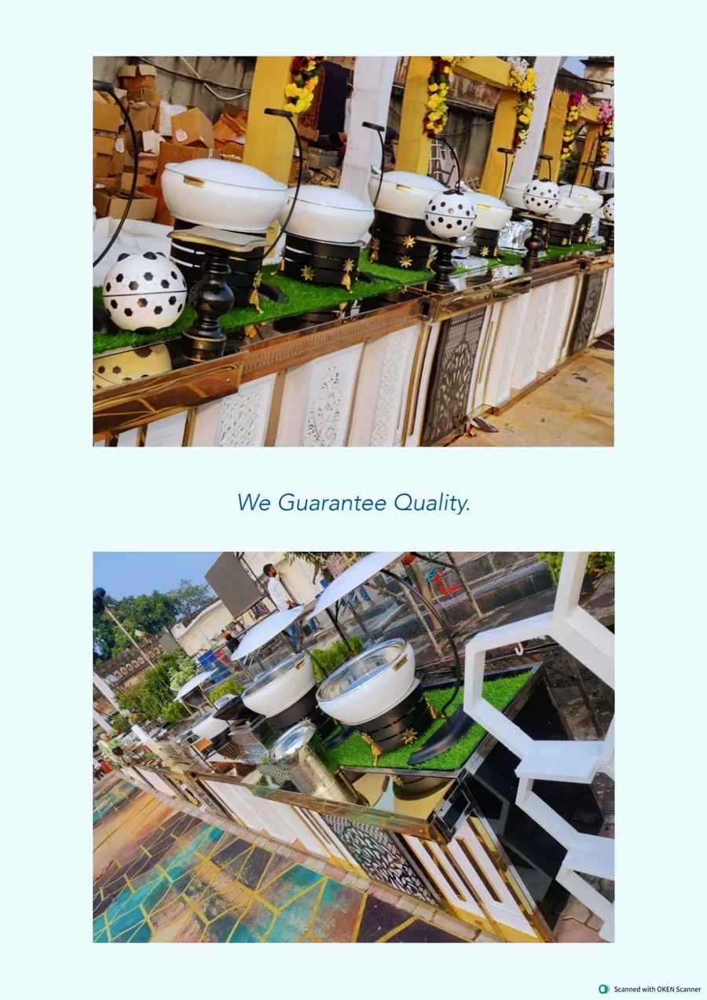
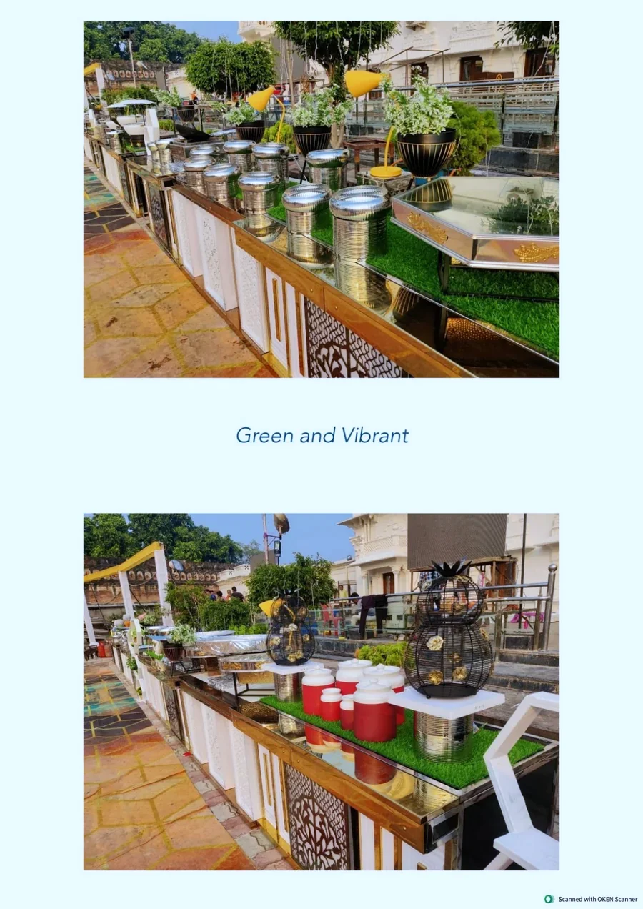
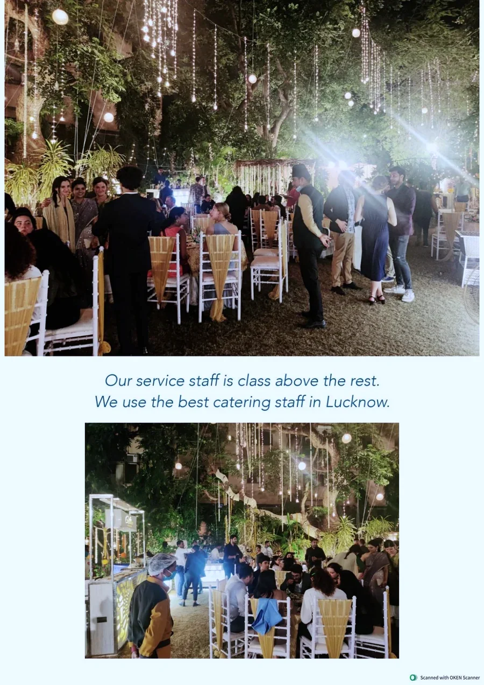
Yours could be the next table we set.
Let's Create Yours